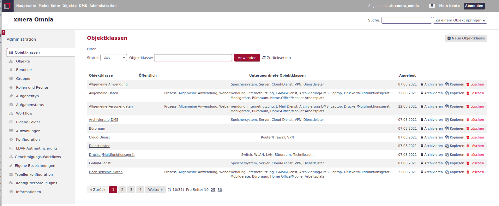
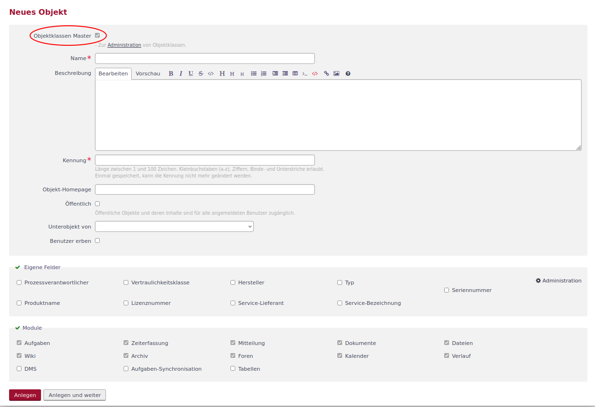
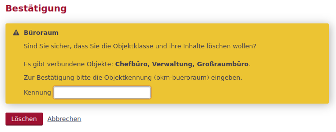

Objektklassen
Funktion von Objektklassen
Objektklassen fungieren zum einen als Vorlage bei der Generierung von Objekten der vorliegenden Klasse, zum anderen sind sie Ordnungs- und Zuordnungskriterium für Objekte. Mit Hilfe von Objektklassen wird bspw. die funktionale Verknüpfung von Objekten gesteuert.
Objektklassen als Vorlage
Bei der Erstellung eines Objekts kann dem Objekt eine Objektklasse zugeordnet werden. Die Zuordnung bewirkt, dass der in der Objektklasse definierten Inhalt aus den Modulen
-
Aufgaben,
-
Mitteilung,
-
Wiki,
-
Tabellen,
-
Kalender,
-
Verlauf und
-
DMS
aber auch aus der Objektkonfiguration in das Objekt übernommen werden. Somit können für Objekte typische Einstellungen vorab definiert werden, was die Erfassung von Objekten effizient gestaltet.
Objektklassen als (Zu-)Ordnungselement
Objekte repräsentieren die Gesamtheit der Ressourcen, die im ISMS abgebildete werden. Die Objektklassen ermöglichen
-
eine leichtere Suche und Filterung von Objekten,
-
eine effizientere Erstellung von Objekt-Verknüpfungen durch Eingrenzung der möglichen Objekte auf eine sinnvolle Auswahl,
-
die Zuordnung von Objektklassen zu Sicherheitsanforderungen und Risikobewertungen, bei denen diese umzusetzen sind.
Somit sind Objektklassen insbesondere für die funktionale Verknüpfung der Objekte von entscheidender Bedeutung. Zudem unterstützen sie die Modellierung des Informationsverbundes.
Neue Objektklasse anlegen
Objektklassen werden in der Administration über den Menüpunkt verwaltet.

Hier lassen sich Objektklassen entsprechend der Bedienung in der Objektkonfiguration bearbeiten.
Neue Objektklassen lassen sich über den Button . Die Konfigurationsmaske unterscheidet sich, wie im folgenden Bild zu sehen, nur im obersten Bereich.

Zum einen fehlt die Möglichkeit eine Objektklasse zu wählen und zum anderen ist das Kontrollkästchen Objektklassenmaster gesetzt.
Ansonsten entsprechen die Einträge dem der Objekte.
Objektklasseninhalte pflegen
Um Inhalte einer Objektklasse zu pflegen, klickt man auf den Namen der Objektklasse in der Liste. Man gelangt in die Objektklassenbearbeitung. Die Inhalte lassen sich entsprechend der Objektbearbeitung pflegen und anpassen.
| Änderungen in der Objektklasse betreffen nur neu angelegte Objekte dieser Objektklasse. Bestehende Objekte der Objektklasse werden nicht verändert. |
Objektklassen verwalten
In der Objektklassenliste können die einzelnen Objektklassen archiviert, kopiert oder gelöscht werden. Dazu stehen entsprechende Button links in der Objektklassenzeile zur Verfügung.
Objektklassen archivieren
 : Die archivierte Objektklasse steht in der Auswahl der Objekte nicht mehr zur Verfügung. Für Objekte, die diese Objektklasse vor der Archivierung zugewiesen bekommen haben, bleibt die Objektklasse erhalten. Die Archivierung kann bei Objektklassen durch den Button
: Die archivierte Objektklasse steht in der Auswahl der Objekte nicht mehr zur Verfügung. Für Objekte, die diese Objektklasse vor der Archivierung zugewiesen bekommen haben, bleibt die Objektklasse erhalten. Die Archivierung kann bei Objektklassen durch den Button  wieder zurückgenommen werden.
wieder zurückgenommen werden.
Objektklassen kopieren
 : Kopiert die Daten der gewählten Objektklasse als Vorlage in eine neue Objektklasse.
: Kopiert die Daten der gewählten Objektklasse als Vorlage in eine neue Objektklasse.
| Die Kopierfunktion ist sehr gut geeignet, um auf Basis der bereits vorhandenen Objektklasse Vorlage alle weiteren Objektklassen zu erstellen, wenn diese eine ähnliche Konfiguration erhalten sollen. |
Objektklassen löschen
 : Löscht die Objektklasse und damit auch die Einträge in den Objekten der Objektklasse. Um eine versehentliche Löschung zu vermeiden, muss die Löschung gesondert bestätigt werden.
: Löscht die Objektklasse und damit auch die Einträge in den Objekten der Objektklasse. Um eine versehentliche Löschung zu vermeiden, muss die Löschung gesondert bestätigt werden.

In dieser Bestätigung werden die verbundenen Objekte gelistet und es muss ein Bestätigungscode eingegeben werden.